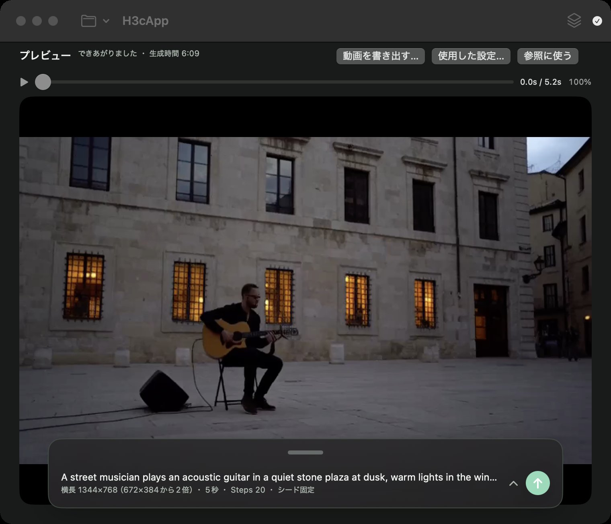

H3cApp for macOS
Macで、音のあるAI動画を。
H3cAppは、文章や画像から音声付きの動画をつくるmacOSアプリです。生成はApple SiliconのMacの中で行います。ダウンロードして使う配布アプリなので、PythonやPyTorchの環境構築は必要ありません。
Apple SiliconのMac・macOS 15 Sequoia以降が対象です。アプリとは別に、AIモデル（約144GB〜）のダウンロードが必要です。

生成例
H3cApp v0.4.4で、下のプロンプトから実際に生成した動画です。どれも音声付きです。再生ボタンを押すと音も流れます（自動では再生しません）。
正方形・中（512×512）・5秒・音声あり
文章から／20ステップ／速度「標準」／シード7。生成時間 5分59秒（M5・24GB）
A small orange cat plays with a ball of yarn on a wooden floor in soft afternoon light. Static camera, gentle movement. Soft room ambience, no speech, no music.
横長・中（672×384で生成し、2倍に拡大して1344×768）・5秒・音声あり
文章から／20ステップ／速度「標準」／シード7。生成時間 6分09秒（M5・24GB）。2倍拡大は生成後の高品質リサンプリングです。
A street musician plays an acoustic guitar in a quiet stone plaza at dusk, warm lights in the windows behind him. Slow push-in camera. Gentle guitar melody, distant footsteps, no speech.
正方形・小（256×256）・5秒・音声あり
1つ目の猫と同じプロンプト・シード・設定で、大きさだけ「小」。はじめ方で最初に試す設定です。細部は粗くなります。生成時間 1分44秒（M5・24GB）
表示用に動画を圧縮し直しています。同じプロンプトとシードでも、Macの機種や設定によって結果は変わることがあります。作者がYouTubeで公開している動画もあります（外部サイト）。
できること
-
文章を動画に
文章（プロンプト）から、映像と音声がそろった動画（MP4）をつくります。長さは1〜15秒、画面の形は横長・正方形・縦長から選べます。
-
画像から動きを作る
最初（と最後）の画像を指定してそこから動かしたり、画像・動画・音声を参考にして新しい動画をつくったりできます。
-
同じ設定で複数案を作る
プロジェクトにまとめておけば、シードを変えて何本か続けて生成し、気に入ったものの設定をあとから呼び戻せます。
自分のMacで使えるか
ダウンロードの前に、対応OSと空き容量を確認してください。とくにAIモデルは非常に大きく、アプリ本体とは別にダウンロードが必要です。
| Mac | Apple Silicon（Mシリーズのチップ）を搭載したMac。Intel Macには対応していません。 |
|---|---|
| macOS | macOS 15 Sequoia以降 |
| M5クラスのGPUの場合 | 最も速い計算方式「高速（int8キャッシュ）」と、「高速モード（試験的）」が使えます。 |
| それ以外のApple Silicon | 「省メモリ（SSDストリーミング）」や「常駐（大容量メモリ向け）」で動きます。速度と必要なメモリは機種と条件によって変わり、M5と同じ速さにはなりません。 |
| メモリ | 作者の確認環境はM5・メモリ24GBです（512×512・15秒まで24GBに収まりました）。それより少ないメモリでの動作は確認していません。 |
| アプリ本体 | DMG 約18.9MB（署名・公証済み） |
| AIモデル（文章・最初/最後の画像から） | FL2VA：約144.1GB（134.2GiB）。最初に必要です。 |
| AIモデル（参照画像・動画・音声を使う場合） | Ref2VA：さらに約144.1GB。合計約288.1GB（268.3GiB）。必要になってから追加できます。 |
| そのほかに必要な容量 | int8キャッシュ（M5クラスで使う場合）1つにつき約19.3GB、生成した動画、参照ファイルのコピー、作業用の空き容量。 |
モデルの初回ダウンロードにはインターネット接続が必要です。動画の生成そのものはMacの中で行います。くわしくはモデルの準備をご覧ください。
始める流れ
生成時間の目安
作者のMacでの実測です。設定を変えると時間も仕上がりも変わります。
| 動画の長さ | 速度「標準」 | 速度「最速」＋高速モード（試験的） |
|---|---|---|
| 5秒 | 5分59秒 | 2分38秒 |
| 10秒 | 15分56秒 | 5分39秒 |
| 15秒 | 30分08秒 | 9分25秒 |
ほかの大きさ・速度設定との組み合わせはREADMEの生成時間の実測にあります。
ダウンロード
最新版はGitHubのリリースページで配布しています。2026年10月10日時点の最新版はv0.4.4（2026年10月7日公開）です。
リリースページのAssetsにある H3cApp-0.4.4.dmg のような .dmg ファイルを選んでください。「Source code (zip)」「Source code (tar.gz)」は開発者向けのソースコードで、通常のインストールには使いません。
各版の変更点はリリースページの説明をご覧ください。